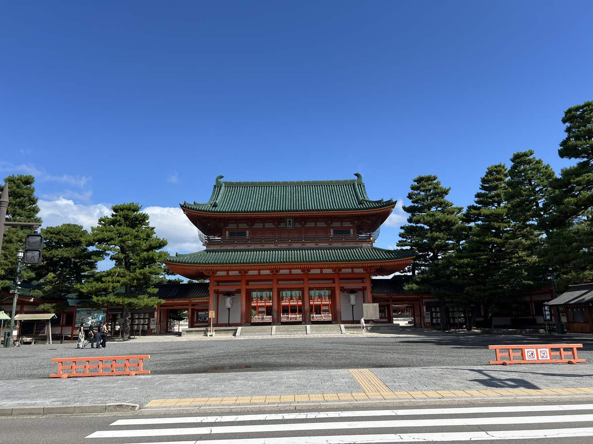

岡崎の交差点に立つと、道の向こうに巨大な朱色の門が見えます。緑の瓦、二層の屋根、白い壁。京都で撮られる写真のなかでも、いちばん「古都らしい」一枚になる場所です。
ところが、この門が建ったのは1895年（明治28年）。今年で131年です。京都の寺社のなかでは、圧倒的に新しい。
これは豆知識ではありません。なぜ、そんな時期に、あんなものを建てたのか。そこに京都という街の性格が、かなりはっきり出ています。

沈んだ街が、自分に立てた記念碑
明治のはじめ、都の機能が東京へ移りました。天皇も、政府も、人も出ていく。千年以上「都であること」を前提に組み立てられてきた街から、その前提が抜けた。京都は人口を大きく減らし、産業も傾きます。
そこから京都がとった手は、懐かしむことではありませんでした。博覧会を開くことです。
平安遷都から1100年にあたるのを機に、京都は内国勧業博覧会を誘致します。その目玉として計画されたのが、平安京の中枢だった朝堂院の復元でした。社殿は実物の8分の5の規模で建てられ、1895年に完成。平安遷都を行った桓武天皇を祀る神社として創祀されます。
当初は、本物の大内裏があった千本丸太町に建てる計画でした。ところが用地の買収がうまくいかず、当時は郊外だった岡崎に場所を移して、1893年に地鎮祭を行っています。つまりあの門は、建つはずだった場所にすら建っていない。
復元ではなく、宣言だった
この経緯を知ってから見上げると、應天門の見え方が変わります。
これは失われた平安京を懐かしんで再現したものではありません。むしろ逆で、沈みかけた街が、これから先も続くと宣言するために、過去の形を借りて建てた新築の建物です。向いているのは後ろではなく前です。
京都は「昔のまま残っている街」だと思われがちですが、実際には作り直し続けてきた街です。応仁の乱でほとんど焼け、幕末にも焼け、そのたびに建て直してきた。平安神宮は、その一番わかりやすい例にすぎません。
そして同じ時期、街の反対側では琵琶湖から水を引く工事が進んでいました。その水はやがて、この岡崎にも引かれます。平安神宮の庭を潤しているのも、そのとき通した水です。——その話は3本目で書きます。
そして、ここは空いている
実務的な話をします。平安神宮は、京都の主要な観光地のなかではかなり空いている部類です。
理由は単純で、應天門の前の広場が広すぎるからです。人が同じ数だけいても、面積が大きいので密度が上がらない。清水寺の参道や伏見稲荷の千本鳥居のように「細い道に人が詰まる」構造になっていません。写真を撮るのに順番待ちをする必要も、まずない。
京都で「混んでいる」と感じるかどうかは、来た人数ではなく道の幅で決まります。岡崎は、道が広い側の京都です。
実用情報
- 境内
- 應天門から入る外拝殿までのエリアは、通常は参拝自由です。広場が広く、混雑を感じにくい場所です。
- 神苑
- 社殿を囲む池泉回遊式の庭は拝観料が必要です。明治につくられた庭で、春の紅しだれ桜がよく知られています。
- 時代祭
- 毎年10月22日。平安神宮の創建にあわせて始まった祭で、各時代の装束の行列が市内を進みます。当日は周辺の交通規制が入ります。
- 時間・料金
- 季節で開閉時間が変わります。訪問前に平安神宮の公式案内で確認してください。
- まわり方
- 岡崎エリアには美術館・図書館・動物園が集まっています。南禅寺までは徒歩圏で、シリーズ3本目の水路閣まで歩いて続けられます。
- 混雑
- 朝と夕方は特に静かです。桜の時期と時代祭の日だけは例外で、しっかり混みます。
シリーズ 京都を通る水
- 01鴨川は等間隔になる誰も決めていないのに、座る人の間隔は揃う
- 021895年生まれの「平安」いま読んでいる記事
- 03寺を突っ切る水道橋南禅寺の境内を、明治のレンガが横切っている理由